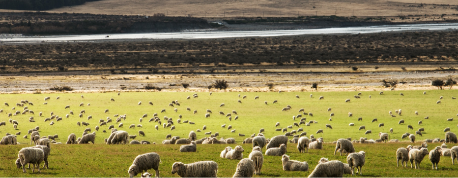

Шерстяные вещи безопасны:
отбор, очистка и изготовление

Наши овцы на теплых рязанских лугах
Как проходит сбор
В среднем каждая овца дает шерсть раз в 2 месяца. В цеху проверки шерсти выполняется качественный отбор собранных экземпляров, после чего эксперты проводят очистку по стандарту ГОСТ 20576-88
-
Сортировка
Сортировка производится по качеству шерсти, длинне и чистоте
-
Чистка
При обработке устраняется
грязь, прилипшая кожа, а также жир животных -
Промывка
Для удаления бактерий,
вирусов а также жира с шерсти животных, используются бани «Вязани» -
Сушка
Сушильные машины
делают шерсть мягкой,
затем шерсть передается на вязку
Почему вы чешитесь?
Наши овцы пасутся на зеленых лугах Казани, получая все необходимо для качественной и крепкой шерсти. Перед изготовлением, проводятся 6 полноценных этапов подготовки шерсти. Но почему же мы еще ощущаем небольшую колкость во время носки зимними вечерами?
Тонкое и грубое шерстяное волокно толще по сравнению с хлопком, полиэстером и шерстью альпаки. Конечно части тела будут чесаться, но это не является аллергической реакцией, это было доказано исследователями из штата Джорджия в 2019 и 2021 году.
- Исследование
- Chemical of the month: AllergyCertified, 2019